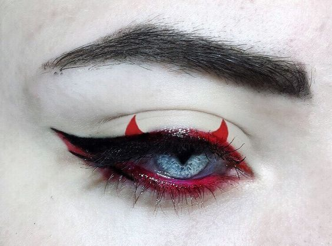

MASTERING A CORPORATE GOTH STYLE
It’s a classic grown-up goth dilemma - what do you wear to work? When your day-to-day style is so gorgeous and full of personality, there’s nothing worse than putting on a boring outfit that looks like everyone else’s to go to the office. But goths can still look professional, and you don’t have to hide who you are at work! Mastering a Corporate Goth style will help you feel like yourself and look absolutely killer every day. Here’s our top tips for putting together the perfect Corporate Goth wardrobe:
Our favourite colour palette
Luckily, the generally accepted colour palette for office wear is perfect for us alt ghouls! Sticking to black and white looks makes it easier to wear pieces that are outside the norm without making you stand out *too* much (unless you want to, obviously!). This also means you can build a capsule wardrobe where everything matches, so you can create new outfits easily, even when you’re half asleep in the mornings. Gothic details like spiderwebs and luxurious brocade can also be worn subtly if the pattern is black-on-black.
Spooky accessories
The best way to ease yourself into a corporate goth look - or to keep the darkness more subtle - is with accessories. Necklaces with bats, statement rings and creepy earrings will help you feel like yourself without going all out. This is perfect if your company has a stricter dress code or if you have a specific uniform - there’s always room for some ghoulish details! When it comes to bags, go for a structured style with plenty of room for all your essentials, but make sure there’s a cute little spider or pentagram on there too!
Super sharp menswear
If menswear is more your vibe, there’s still loads of easy ways to incorporate a darker style. Add interest to work shirts with statement buckles or the most adorable moon print, add chains to a classic waistcoat and go for smart trousers with added zip details. You’ll look hot AF and professional AF at the same time - what a dreamboat!
Make up
When it comes to makeup, it really depends on your company culture. We firmly believe everyone should be able to paint their face however they want, for everyday life and for work. Unfortunately, some employers don’t see it that way and might require you to tone it down a bit - boo! Even in those situations, you can usually get away with some subtle eyeliner like a small wing, and a deep red lipstick will always look sophisticated. If you’re able to do whatever you want with your makeup, feel free to go for a smokey eye or graphic liner to look like the ghoulish goddess you are! Long black stiletto nails may make it harder to type, but the powerful feeling they give you makes it totally worth it!
Glam Goth Fashion tips
The key to this look is a mystery, dark colors and a beautiful array of laced fabrics and accessories. The Glam Goth look is a wonderfully expressive look that is easy to customize and personalize, which is probably why it has become so popular in recent years. Unlike the classic gothic look, Glam Goth allows girls to express not only an alternative personality but their femininity. This makes the intriguing world of the gothic instantly accessible even for girls who would not associate themselves with the Goth culture.
Makeup
You will need, dark eyeshadow, pale foundations and dark red and black lipstick. These can be easily found on RebelsMarket
Clothing
The clothing you should include a lot of dark colors and black fabrics. You can use black miniskirts, black vest tops as under layers and, if you want to add a touch of something special, patterned tops and studded black high heels. You can find some beautiful classic and modern designs, from laced corsets to fashionable hoodies at the RebelMarket, a great online site for buying and selling alternative clothing. The key to the Glam Goth look is all about elegance, it is important to remember to keep it classy. This can be achieved through the use of simplistic clothing without patterns or too much color or sparkle. This allows you to add your own personality through added accessories without overdoing the look.
A great outfit could include a short, tight black dress, overlapped by a black crop top or vest top and black silver studded shoes. Top this outfit off with a silver or black studded belt, studded purse, black and silver metal bangles with a matching skull necklace and rings. This outfit would be great for going out to a party or club, the black and lace is a sophisticated combination.
Hair
No look would be complete without the hair and don’t fear there are some great ways to achieve an effective hairstyle. If you have long hair there is a lot you can do, use a thin comb to backcomb the bottom layers of your hair to create volume, and of course, spray to keep in place. If you have short hair then you can easily achieve a punk-like look that will fit in easily with a Goth Glam style. Spike your hair using gel and a good comb, before styling it into place with hairspray. The short spiked hair look is a classic look for any Goth girl, and can also be used to create a rock look or any alternative style as it is versatile and fashionable.
Attitude
Additionally, do not forget that the most important addition to your Glam Goth look is the attitude. You need to have confidence and mystery in order to pull this off, and as long as you feel confident and stylish, you will project the style as well as beauty.
Casual Goth: How To Get it Right
For starters, goth is not about everything-black for the sake of it. And it’s definitely not about looking scary. The casual goth look is about taking inspiration from goth fashion and applying that inspiration to create interesting everyday outfits.
Spikes and Studs Can Work Too
You don’t have to go full-on goth to get the look. In fact, you might be surprised to learn that a lot of casual goths don’t even consider themselves goths. But if you’re looking to add a little more edge to your outfit, then metal and studs are always a good way to do it. Just make sure not to overdo it. A few well-placed pieces will suffice. And remember, quality over quantity!
Distressed Fabrics Are Also an Option
If you’re not a fan of metal and studs, then distressed fabrics are another great way to add some gothic edge to your outfit. Ripped jeans, frayed hemlines, and torn t-shirts are all fair game. Just make sure that the overall look is still put together. You don’t want to look like you just rolled out of bed! So there you have it! These are just a few tips on how to get casual goth right. Just remember to keep it simple, focus on quality over quantity, and have fun with it! Goth should be about self-expression, after all.